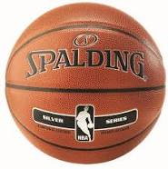

|  |  |
 |
 |
|---|---|---|---|
 |
 |
Kosárlabda
A kosárlabda egy olyan labdajáték, melyet két ötfős csapat játszik. Mindkét csapatnak van egy-egy a pályán egymással szemben 3,05 méter magasan elhelyezett lyukas kosara. A csapatok célja a szabályszerű játék során az, hogy a labdát az ellenfél kosarába dobják, illetve hogy megakadályozzák a másik csapatot ugyanebben. Wikipédia
- Legmagasabb irányító testület: FIBA
- Csapat létszáma 5 fő
- Első játék: 1891. Springfield, Massachusetts, (USA)
- Olimpiai: 1936 óta
- Érintés: Van
- Pozíciók: center, Irányító, Kiscsatár, Dobóhátvéd, Erőcsatár